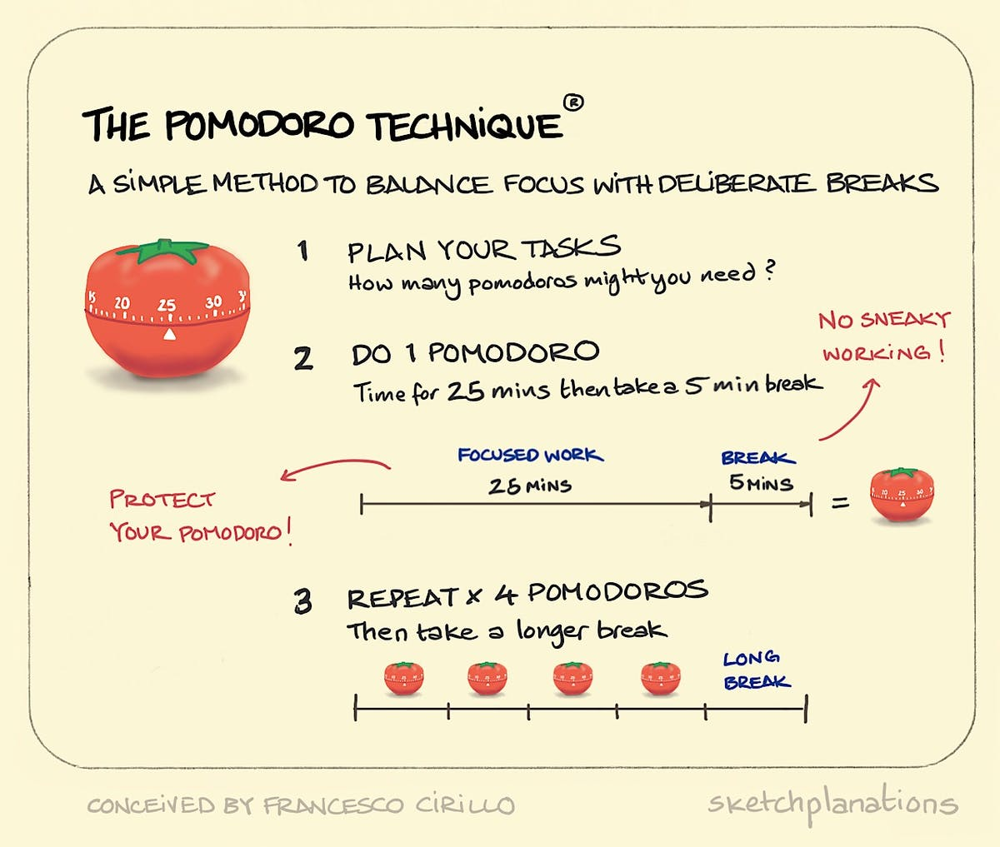
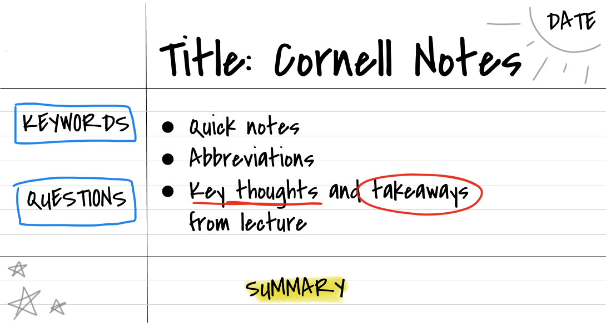

4 Effective Study Techiniques you should try
Have you ever feel that you spent a lot of time sit on your table but you can't get your study done. Or reading the textbook over and over again but still feel like you can't remember anything. That's because you haven't try the right study technique. As a student who also stuggle with my study, I have found some study techniques that make my study more effective
1. Pomodoro
Instead of finish everything at one time without break, try to break your study into smaller section. Pomodoro Techinique is a time management system that break your workday into 25 minutes work and 5 minutes break. After 4 sections, you can have a longer break for 15-30 minutes. This method will help you reduce the stress level of your work, giving you a small break between each section can help you reset your brain and bring your attention back.
2. Color-Coded Note
A study found that color can imporve the your memory's performence, especially warm colors like red and yellow. Some tips when using this technique:
- Write your key points in red color
- Hightlight important ideas in yellow
- Organize your study topic in color
- Don't over coloring, pay attention to important information
3. Cornell Method
The Cornell Note Taking is a technique to short down your note into 3 main parts:
- Part 1: Note Colum: This part will take to most space in your note, you will write down note during class, try to use concise sentence and list
- Part 2: Cue Collumn: This part you will do if after class or when reviewing your note, put down any keyword that connects points or any questions, diagram you have
- Part 3: Summary Column: You will use the bottom of each page to summarize the note on that page
4. The PQ4R Method
This method can imporove your understanding and memorize of the topic. This method will include 6 steps of process
- Preview: Skim through the text before you actually reading it to get an idea
- Question: Create questions for yourself after you preview it
- Read: Read and try to answer the question while you reading
- Reflect: Try to answer all the questions, you can go back and see if you can answer all
- Recite: Summarize what you just read, so you can review it later
- Review: Look at the material again, and answer all the question if you haven't